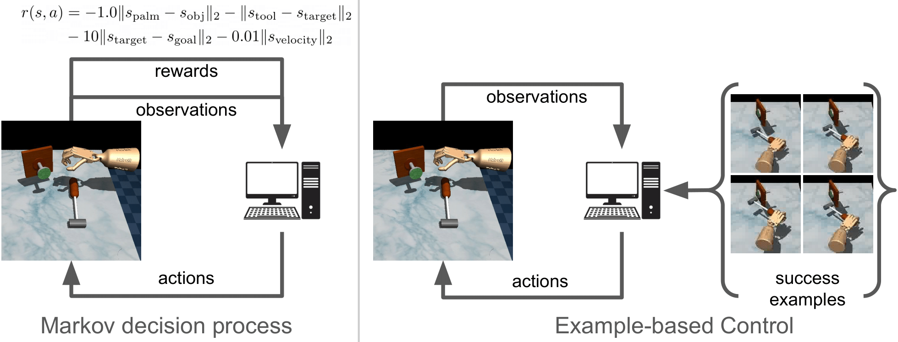

Replacing Rewards with Examples: Example-Based Policy Search via Recursive Classification

tldr: In many scenarios, the user is unable to describe the task in words or numbers, but can readily provide examples of what the world would look like if the task were solved. Motivated by this observation, we derive a control algorithm that learns a policy for solving tasks, given only examples of successful outcome states. Our method, based on recursive classification, learns a value function directly from transitions and success examples. Our method outperforms prior methods at learning from success examples. The key difference from prior work is that our method does not learn an auxiliary reward function, and therefore requires fewer hyperparameters to tune and lines of code to debug. We show that our method satisfies a new data-driven Bellman equation, where examples take the place of the typical reward function term.
Videos of Learned Policies
Below, we visualize examples of the behavoir learned by our method. The green images shown on the left are examples of the success examples our method uses to learn these tasks. Note that these success examples are not expert trajectories, but rather examples of states where the task is solved (e.g., where the nail is hammered into the wall). We emphasize that our method does not use any reward function.
TASK: Hammer the nail into the board.

Note that the nail has already been inserted in all examples.
TASK: Put the green object in the blue bin.

TASK: Place the lid on the box.

TASK: Open the door.

TASK: Open the drawer.

TASK: Lift the object. (The colored spheres are irrelevant.)

TASK: Push the red object to the green sphere.

Additional videos of behaviors learned by RCE
TASK: Close the drawer.

TASK: Clear the object from the table. (image observations)
TASK: Reach for the red object. (image observations)

Failure Cases
For the task below, the agent makes some headway on solving the task, but is unable to keep the object in the desired location.
TASK: Pick up the ball.